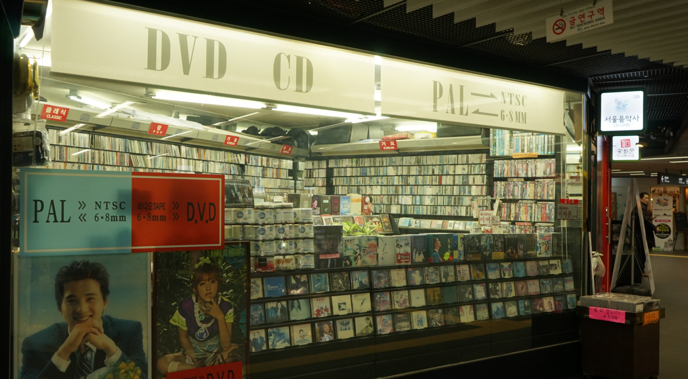

서울음악사
돌레코드
위치 : 서울 중구 을지로 지하 12
운영 시간 : 09:00~22:00
일요일 휴무
무엇이 있나요?
서울시청 지하도 상가에 자리한 서울음악사는 1972년 개업한 전국에서 가장 오래된 음반가게입니다.
음반시장이 폭발적으로 성장하던 시기부터 지금까지 흥망성쇠를 고스란히 기억하고 있는 곳이랍니다.
#클래식_매니아
#카세트테이트
#CD
#엘피판
#음반
